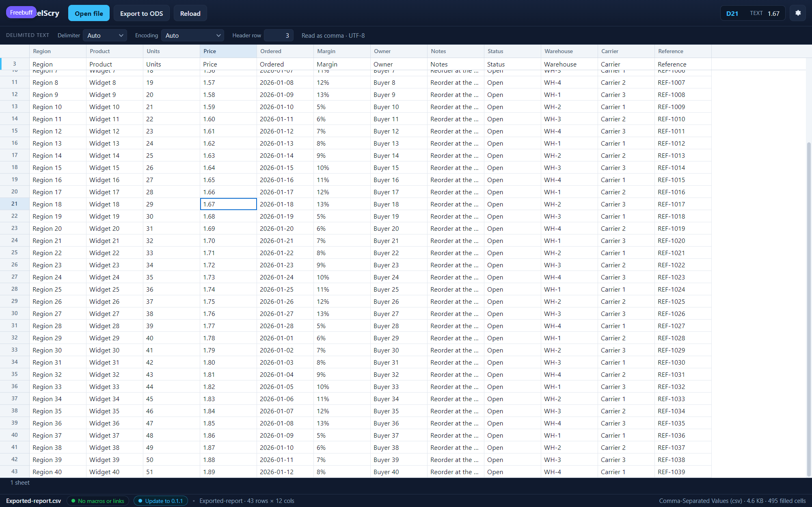

<!doctype html>
<meta charset="utf-8">
<title>ExcelScry — reopening a file where it was left</title>
<style>
  body { margin: 0; background: #1b1d22; color: #c9cdd6;
         font: 14px/1.5 Segoe UI, system-ui, sans-serif; }
  figure { margin: 0; }
  img { display: block; width: 100%; height: auto; }
  figcaption { padding: 12px 16px; }
  code { color: #8fd3ff; }
</style>
<figure>
  
  <figcaption>
    This is the grid the moment the file was opened again, not where it was
    scrolled to. The export is 43 records long and was left near its end, with
    <code>D21</code> selected — so that is the row the body opens on, the cell
    the readout names, and the header row the file had pinned (row 3, whose
    names are in the strip above). Nothing was retyped to get back here: the
    sheet, the cell and the scroll offset are kept per file, written a moment
    after the moving stops, and handed back with the workbook the next time it
    is opened. A workbook with several tabs reopens on the tab that was in
    front, with that tab's own position. The store records the file's length
    and modification time beside the position, so a different export put at the
    same path opens at its own top instead of inheriting a row that meant
    something in the file that used to be there; an unreadable store is simply
    ignored, and the file opens at A1 as it would have without one. (Shown in
    the UI harness, which was scrolled and closed and then asked to open the
    same file again.)
  </figcaption>
</figure>
